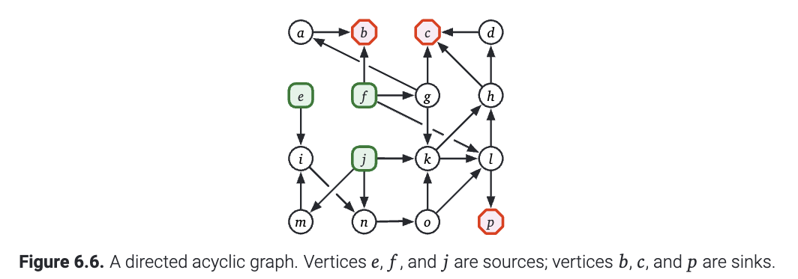
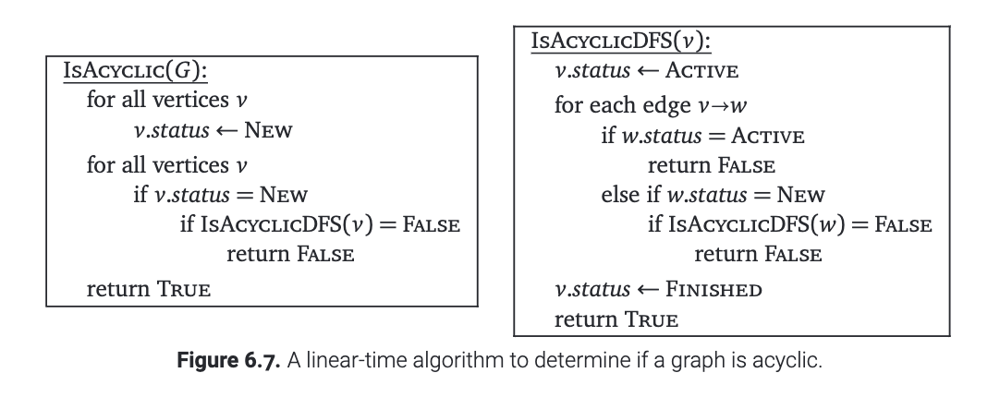

我们一般简称 有向无环图(directed acyclic graph) 为一个DAG. 一个DAG是有向图, 并且没有环. 任何一个DAG中没有入度(indegree)的节点称为源(source), 没有出度(outgoing edges)称为汇点(sink). 一个没有连边的孤立的节点既是源又是汇. 每一个DAG都有至少一个源和汇. 但是, 很多图里面有不止一个源点/汇点, 比如一个$n$个节点, 没有边的图里面, 每一个节点都是既是源又是汇.
 (图6.6 一个DAG, 节点$e,f,j$是源, 节点$b,c,p$是汇.)
回忆我们早些时候分类讨论的结果, 如果对于一条边$u\to v$, 只要$u.post<v.post$, 那么这个图就包含一条从$v$到$u$的路径. 因此这个图中就包含一个经过边$u\to v$的有向的环(cycle). 因此, 我们可以在 $O(V + E)$ 时间内确定给定的有向图 $G$ 是否为 DAG. 只要把它遍历一遍, 看看每条边相连的两个节点的$post$值有没有出现上述的异常.
除了标记节点的编号, 我们还可以维护当前每个节点的状态. 一旦我们发现有一条边到达的是正在被访问的(active)节点的话, 就立即报告这张图里面有环. 这个算法的时间复杂度也是$O(V+E)$. 如下图所示.
